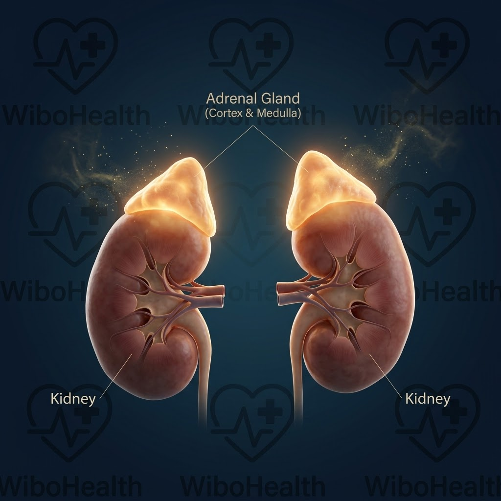

كم مرة التزمت بنظام غذائي قاسي ومارست الرياضة بانتظام، لكن الميزان رفض التحرك ووجدت دهون أسفل البطن تزداد عناداً؟ في أغلب هذه الحالات، لا تكون المشكلة في السعرات الحرارية ولا في قلة الإرادة، بل في معركة هرمونية صامتة يقودها قائد خفي داخل جسمك: هرمون الكورتيزول (Cortisol).
يُعد الكورتيزول هرمون البقاء الأول في الجسم البشري؛ لكن عندما يتحول التوتر العصبي وضغوط العمل وقلة النوم إلى حالة مزمنة ومستمرة، يتحول هذا الحارس الأمين إلى أكبر معطل لحرق الدهون ومحفز رئيسي لتخزين ما يُعرف طبياً بـ "الكرش العصبي" (Stress Belly). في هذا الدليل السريري المفصل، سنفكك شفرة هذا الهرمون ونكشف حقيقة الخلط الشائع بينه وبين دواء الكورتيزون، مع خطة طبية مثبتة بالدليل لترويضه واستعادة توازنك الأيضي.
الفارق الجوهري: الكورتيزول (Cortisol) مقابل الكورتيزون (Cortisone)
الكورتيزول (Cortisol): هو الهرمون الطبيعي النشط بيولوجياً الذي تصنعه قشرة الغدة الكظرية داخل جسمك استجابة للتوتر وتنظيم السكر.
الكورتيزون (Cortisone): هو مركب كيميائي غير نشط يُستخدم طبياً كدواء أو حقن، ويتحول في الكبد إلى كورتيزول لمكافحة الالتهابات الشديدة. خلط الناس بينهما شائع، لكن الأول تصنعه أنت بنفسك، والثاني دواء يُصرف بوصفة طبية!
كيف يصنع الكورتيزول دهون البطن والكرش العصبي؟
عندما يشعر دماغك بضغط نفسي أو جسدي مستمر، يُرسل إشارات فورية للغدة الكظرية (المستقرة فوق الكليتين) لإفراز الكورتيزول. وظيفته التطورية كانت إعدادك للقتال أو الهروب، وذلك برفع سكر الدم لمد العضلات بالطاقة السريعة.
ولكن في الحياة الحديثة، التوتر غالباً ما يكون ذهنياً ومزمناً دون مجهود بدني يستهلك هذا السكر. والنتيجة؟ يبقى السكر مرتفعاً في الدم، مما يجبر البنكرياس على ضخ كميات هائلة من الإنسولين. يؤدي اجتماع (كورتيزول مرتفع + إنسولين مرتفع) إلى أمر بيوكيميائي صارم بتعطيل إنزيمات حرق الدهون وتفعيل إنزيم (Lipoprotein Lipase) الذي يقوم بشفط الدهون وتخزينها عميقاً حول الأعضاء الحيوية في البطن لحمايتها، ليتشكل الكرش العصبي.

رسم سريري توضيحي: موقع الغدة الكظرية فوق الكليتين ومسارات إفراز الكورتيزول استجابة للتوتر📱 اهزم الكرش العصبي ومقاومة الإنسولين مع تطبيق بودي 💚
التوتر يرفع سكر دمك تلقائياً؛ لا تزد الطين بلة بأطعمة ذات مؤشر جلايسيمي مرتفع! امسح باركود أي طعام في السوبرماركت واكتشف البدائل التي تحافظ على هدوء إنسولينك وكورتيزولك.
المراحل السريرية لاختلال الكورتيزول المزمن
ارتفاع مؤقت للكورتيزول لمواجهة موقف طارئ، يليه انخفاض سريع للمستوى الطبيعي بمجرد زوال التهديد. الحرق سليم ولا يحدث تخزين دهون.
بقاء الكورتيزول مرتفعاً ليلاً ونهاراً؛ تتراكم دهون البطن الحشوية، تزداد مقاومة الإنسولين، وتشتد نوبات طلب الحلويات والموالح ليلاً.
انقلاب الإيقاع اليومي (كورتيزول منخفض صباحاً يسبب صعوبة الاستيقاظ، ومرتفع ليلاً يسبب الأرق)، مع وهن عضلي وخمول مناعي حاد.
علامات سريرية تؤكد أن توترك هو سبب دهون بطنك
- الاستيقاظ المفاجئ عند الساعة 3-4 فجراً: تذبذب حاد للكورتيزول يوقظك بضربات قلب متسارعة وأرق.
- تراكم الدهون في أسفل البطن حصراً: أطرافك وأردافك قد تكون نحيفة بينما محيط الخصر بارز ومتصلب.
- الرغبة الشديدة في الأطعمة السكرية والمالحة: الكورتيزول يستنزف معادن الجسم ويطلب سكريات سريعة لتغذية الدماغ المتوتر.
- احتباس السوائل وانتفاخ الوجه (Moon Face): الكورتيزول المرتفع يحاكي هرمون الألدوستيرون، مما يحبس الصوديوم والماء بالجسم.
- بطء الاستشفاء وضمور الكتلة العضلية: الكورتيزول هرمون هادم (Catabolic) يكسر بروتين العضلات ليحوله لجلوكوز.
البروتوكول السريري المتكامل لخفض الكورتيزول وحرق دهون البطن
الخبر السريري المبشر هو أن السيطرة على الكورتيزول لا تحتاج إلى تجويع ولا أدوية مهدئة، بل إلى إشارات عصبية وهضمية تعيد طمأنة جهازك العصبي المركزي:
1. إعادة ضبط الإيقاع اليومي بضوء الشمس الصباحي
التعرض لضوء الشمس المباشر لمدة 10-15 دقيقة خلال الساعة الأولى بعد الاستيقاظ يحفز ذروة كورتيزول صحية صباحية (Cortisol Awakening Response)، مما يضمن انخفاضه التدريجي مع حلول الليل وارتفاع هرمون النوم (الميلاتونين).
2. استراتيجية الكافيين وتجنب القهوة على معدة فارغة
شرب القهوة فور الاستيقاظ على معدة خاوية يرفع الكورتيزول بنسبة تفوق 30% ويسبب صدمة للغدة الكظرية. الحل السريري: أخّر فنجان قهوتك 60 إلى 90 دقيقة بعد الاستيقاظ، واحرص على تناول وجبة إفطار تحتوي على بروتين ودهون صحية قبلها.
3. المكملات الغذائية السريرية المثبتة لترويض الكورتيزول
أثبتت التجارب السريرية فعالية مكمل مغنيسيوم جلايسينات (Magnesium Glycinate) قبل النوم لتهدئة المستقبلات العصبية وخفض نبضات القلب، بالإضافة إلى مستخلص الأشواغاندا (KSM-66) الذي يقلل الكورتيزول بنسبة تصل إلى 28% في حالات التوتر المزمن، وفيتامين C الذي يدعم صحة خلايا الغدة الكظرية مباشرة.
4. التمارين الذكية وتجنب إجهاد الكارديو العنيف
ممارسة الكارديو العنيف والجري الطويل وأنت مجهد ذهنياً يزيد الطين بلة ويرفع الكورتيزول أكثر! البروتوكول الأفضل لمريض الكرش العصبي هو: تمارين المقاومة المعتدلة، متبوعة بالمشي الهادئ في الهواء الطلق لمدة 30-45 دقيقة يومياً لتفريغ الشحنات العصبية دون إجهاد.
أسئلة شائعة يجيب عنها فريق WiBo Health
فحص الدم الصباحي يعطي مؤشراً أولياً، لكن الفحص الأدق سريرياً هو تحليل الكورتيزول اللعابي عبر 4 عينات موزعة على مدار اليوم (Salivary Cortisol Rhythm)، لمعرفة منحنى الهرمون الصباحي والمسائي بدقة.
نعم، الاستخدام الطبي طويل الأمد لأدوية الكورتيزون الصناعية يسبب احتباس السوائل وفتح الشهية وتخزين الدهون في الوجه والبطن، ولذلك يجب أن يؤخذ تحت إشراف طبي دقيق مع خطة غذائية صارمة قليلة الصوديوم والسكر.
المعلومات الواردة في هذا الدليل مقدمة للتثقيف الصحي والغذائي فقط، ولا تغني عن الاستشارة السريرية المباشرة أو تعديل جرعات الأدوية الهرمونية الموصوفة لك من قبل طبيبك المعالج.